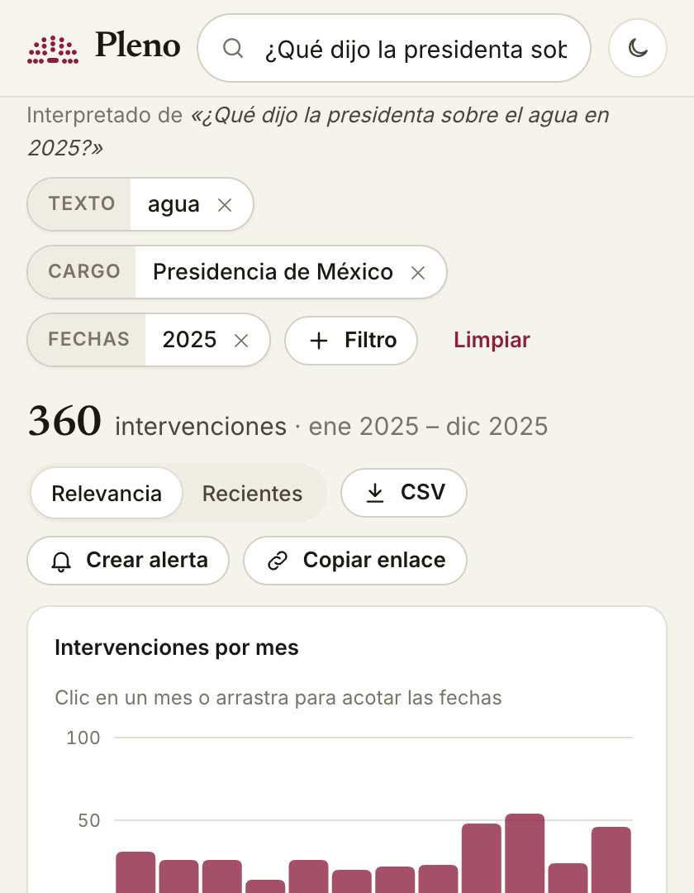

Busca como hablas
Pleno entiende quién, sobre qué y cuándo, y lo convierte en filtros que puedes ajustar. Cada intervención lleva fecha, persona, cargo y enlace a la versión estenográfica oficial.
«¿Qué dijo la presidenta sobre el agua en 2025?» → 360 intervenciones
